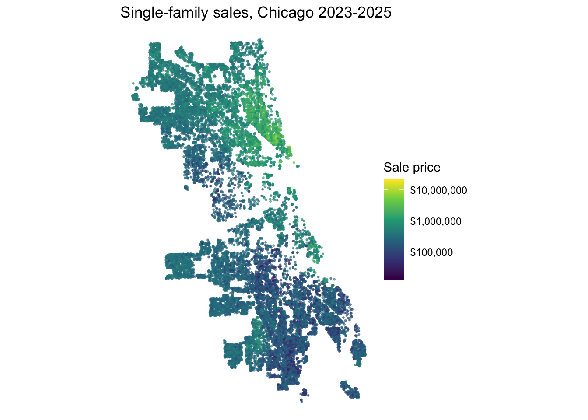

Code
library(tidyverse)
library(tidycensus)
library(sf)
library(caret)
library(spdep)
library(nngeo)
library(scales)
options(scipen = 999)MUSA 5080 · Team assignment
Property assessments determine property tax bills, so systematic valuation errors can place an unfair burden on some households. The 2017 Chicago Tribune investigation, “The Tax Divide,” found that lower-value homes in Cook County were often assessed at higher shares of their market value than expensive homes.
In this project, we build a model to predict single-family sale prices in Chicago from 2023 to 2025. We will create spatial features and test whether they improve prediction accuracy and reduce geographic patterns in the errors.
We use separate training and test files.
| File | Role in our project |
|---|---|
chicago_train.csv |
About 80% of the houses, with observed sale prices |
chicago_test.csv |
The remaining houses, without sale prices |
Clean only the training sales, build every feature in the same way for both files, and compare models using 10-fold CV RMSE and Moran’s I. Fit the selected model to all cleaned training sales and predict every test house.
We clean and explore the sales, build a structure-only baseline, add spatial and neighborhood features, compare every model in a shared log, map the remaining errors, and examine whether the final predictions are equitable across Chicago neighborhoods.
We identify likely market sales, record each cleaning rule and its effect, and explore the data with at least four plots, including a map of sale prices.
Removes implausible training sales while preserving every test row for the final prediction file.
train_raw <- all_sales %>% filter(split == "train")
n0 <- nrow(train_raw)
keep_1 <- train_raw$sale_price >= 10000
keep_2 <- keep_1 & train_raw$sale_price / (train_raw$building_000sf * 1000) >= 20
keep_3 <- keep_2 & train_raw$building_000sf >= 0.3
cleaning_log <- tibble(
rule = c("sale_price >= $10,000",
"price per sq ft >= $20",
"building >= 300 sq ft"),
why = c("Nominal / non-arm's-length transfers ($1 family sales, sheriff sales)",
"Below ~$20/sq ft a 'sale' is not market value (median is ~$250/sq ft)",
"Structures smaller than a studio are data errors, not livable houses"),
dropped = c(sum(!keep_1), sum(keep_1 & !keep_2), sum(keep_2 & !keep_3))
) %>%
mutate(remaining = n0 - cumsum(dropped))
train <- train_raw[keep_3, ]
cleaning_log# A tibble: 3 × 4
rule why dropped remaining
<chr> <chr> <int> <int>
1 sale_price >= $10,000 Nominal / non-arm's-length transfers… 0 23200
2 price per sq ft >= $20 Below ~$20/sq ft a 'sale' is not mar… 100 23100
3 building >= 300 sq ft Structures smaller than a studio are… 1 23099The first rule documents that nominal transfers were checked even though none remained in this file. The next two rules remove transactions with implausibly low prices per square foot and structures smaller than 300 square feet. New construction and high-end sales remain because they can be genuine market transactions, although the luxury tail will make RMSE harder to reduce.
Checks missingness separately in the cleaned training data and the untouched test data before any new predictor is used.
na_audit <- all_sales %>%
st_drop_geometry() %>%
group_by(split) %>%
summarise(across(everything(), ~ sum(is.na(.x))), .groups = "drop") %>%
pivot_longer(-split, names_to = "variable", values_to = "n_missing") %>%
filter(n_missing > 0) %>%
arrange(variable, split)
na_audit# A tibble: 11 × 3
split variable n_missing
<chr> <chr> <int>
1 train full_basement 2
2 test garage_size 5
3 train garage_size 11
4 train lotsize_acre 1
5 test num_fireplaces 63
6 train num_fireplaces 349
7 test num_half_baths 7
8 train num_half_baths 38
9 test sale_price 5789
10 test warmairfurnace 2
11 train warmairfurnace 7The baseline variables have no missing values. Any optional house variable with missing values must be imputed rather than used to remove rows, because every test house needs a prediction.
Uses four plots to identify skewness, structural relationships, time patterns, and spatial variation that may guide the models.
td <- st_drop_geometry(train)
ggplot(td, aes(x = sale_price)) +
geom_histogram(bins = 60) +
scale_x_continuous(labels = label_dollar(scale_cut = cut_short_scale())) +
theme_minimal() +
labs(title = "Sale price is heavily right-skewed",
x = "Sale price", y = "Sales")
ggplot(td, aes(x = building_000sf, y = sale_price)) +
geom_point(alpha = 0.15, size = 0.5) +
geom_smooth(method = "lm", se = FALSE, color = "#b2182b") +
theme_minimal() +
labs(title = "Bigger house, higher price (with a long luxury tail)",
x = "Building size (000 sq ft)", y = "Sale price")
td %>%
group_by(year) %>%
summarise(median_price = median(sale_price), sales = n(), .groups = "drop") %>%
ggplot(aes(x = factor(year), y = median_price, group = 1)) +
geom_line(color = "#2166ac", linewidth = 0.8) +
geom_point(aes(size = sales), color = "#2166ac") +
scale_y_continuous(labels = label_dollar()) +
theme_minimal() +
labs(title = "Median sale price by year",
x = "Sale year", y = "Median sale price", size = "Sales")
ggplot(train) +
geom_sf(aes(color = sale_price), size = 0.4, alpha = 0.6) +
scale_color_viridis_c(trans = "log10", labels = label_dollar()) +
theme_void() +
labs(color = "Sale price", title = "Single-family sales, Chicago 2023-2025")
Answer: How did our exploration shape our modeling choices?
Our answer: Sale prices are strongly right-skewed, so a small number of luxury transactions can dominate RMSE. Size is positively related to price, but similarly sized houses still have very different prices. The price map also shows a strong north-south pattern. These findings suggest that location and accessibility features may explain variation that house structure alone cannot capture.
We start with a structure-only baseline, add features in clear steps, and record each model in a tibble with the columns model, added, cv_rmse, moran_i, and notes.
Specifies a simple starting model using only building size, age, bedrooms, and full bathrooms.
f0 <- sale_price ~ building_000sf + building_age + num_bedrooms + num_full_baths
baseline_pred <- cv_pred(f0, train)
baseline_rmse <- cv_rmse(f0, train)
baseline_rmse[1] 350408.9The fixed seed keeps the folds comparable across the model log, and the out-of-fold predictions prevent the residual diagnostics from using fitted values from houses seen by the model.
Maps out-of-fold residuals, where positive values mean the model predicted too low and negative values mean it predicted too high.
train <- train %>%
mutate(resid_0 = sale_price - baseline_pred)
quantile(train$resid_0, c(.01, .05, .95, .99)) 1% 5% 95% 99%
-714168.8 -451552.0 410205.1 977637.5 ggplot(train) +
geom_sf(aes(color = resid_0), size = 0.4, alpha = 0.6) +
scale_color_gradient2(low = "#2166ac", mid = "grey90", high = "#b2182b",
midpoint = 0, limits = c(-400000, 400000), oob = squish) +
theme_void() +
labs(color = "Residual ($)", title = "Baseline: where the model is wrong",
subtitle = "Red = actual higher than predicted (under-predicted)")
The fixed color limits keep a few luxury-house errors from hiding the larger geographic pattern in the rest of the city.
Uses five-nearest-neighbor weights and a permutation test to measure whether nearby houses have similar prediction errors.
coords <- st_coordinates(train)
w_knn <- nb2listw(knn2nb(knearneigh(coords, k = 5)), style = "W")
train$resid_lag <- lag.listw(w_knn, train$resid_0)
ggplot(st_drop_geometry(train), aes(resid_0, resid_lag)) +
geom_point(alpha = 0.12, size = 0.5) +
geom_smooth(method = "lm", se = FALSE, color = "#b2182b") +
coord_cartesian(xlim = c(-5e5, 5e5), ylim = c(-2e5, 2e5)) +
theme_minimal() +
labs(x = "My residual", y = "Average of my 5 neighbors' residuals",
title = "Moran scatterplot: the slope is Moran's I")
mc <- moran.mc(train$resid_0, w_knn, nsim = 499)
mc$statisticstatistic
0.3339776 mc$p.value[1] 0.002The permutation p-value shows whether the observed clustering is unusual, while the size of Moran’s I shows how much spatial structure remains for later features to explain.
Records the baseline accuracy and spatial residual clustering so every later model can be compared with the same two criteria.
model_log <- tibble(
model = "m0",
added = "structure only (size, age, beds, baths)",
cv_rmse = baseline_rmse,
moran_i = as.numeric(mc$statistic),
notes = "Baseline: house features only, no location info yet"
)
model_log# A tibble: 1 × 5
model added cv_rmse moran_i notes
<chr> <chr> <dbl> <dbl> <chr>
1 m0 structure only (size, age, beds, baths) 350409. 0.334 Baseline: house…Lower CV RMSE means better predictive accuracy, while lower Moran’s I means less geographic structure remains in the errors; both measures matter when judging a new feature.
Downloads the official 2024 CTA rail-station points from the Chicago Data Portal and projects them to match the sales data.
cta_stations <- socrata_get(
dataset = "3tzw-cg4m",
where = "1 = 1",
select = "station_id, longname, the_geom"
) %>%
filter(!st_is_empty(geometry)) %>%
st_transform(st_crs(all_sales))
cta_stations %>%
st_drop_geometry() %>%
summarise(stations = n_distinct(station_id)) stations
1 145Source: CTA - ‘L’ (Rail) Stations, updated in 2024 and therefore inside the assignment’s 2023–2025 time window.
Represents downtown with a fixed point near Chicago City Hall so every house receives the same reproducible distance measure.
downtown <- st_sfc(
st_point(c(-87.6320, 41.8837)),
crs = 4326
) %>%
st_transform(st_crs(all_sales))Creates distance and nearby-station measures on all_sales so training and test houses receive identical features without using sale prices.
cta_dist_ft <- units::drop_units(st_distance(all_sales, cta_stations))
downtown_dist_ft <- units::drop_units(st_distance(all_sales, downtown))[, 1]
all_sales <- all_sales %>%
mutate(
dist_downtown_mi = downtown_dist_ft / 5280,
dist_cta_mi = apply(cta_dist_ft, 1, min) / 5280,
mean_3cta_mi = apply(cta_dist_ft, 1, function(x) mean(sort(x)[1:3])) / 5280,
cta_within_half_mile = rowSums(cta_dist_ft <= 2640)
)
train_row_ids <- train$row_id
train <- all_sales %>%
filter(row_id %in% train_row_ids, split == "train") %>%
arrange(match(row_id, train_row_ids)) %>%
mutate(
resid_0 = train$resid_0,
resid_lag = train$resid_lag
)Verifies that the features are complete and reviews their distributions before they enter a model.
accessibility_vars <- c(
"dist_downtown_mi", "dist_cta_mi",
"mean_3cta_mi", "cta_within_half_mile"
)
all_sales %>%
st_drop_geometry() %>%
group_by(split) %>%
summarise(
across(
all_of(accessibility_vars),
list(missing = ~ sum(is.na(.x)), median = ~ median(.x)),
.names = "{.col}_{.fn}"
),
.groups = "drop"
)# A tibble: 2 × 9
split dist_downtown_mi_missing dist_downtown_mi_median dist_cta_mi_missing
<chr> <int> <dbl> <int>
1 test 0 9.17 0
2 train 0 9.14 0
# ℹ 5 more variables: dist_cta_mi_median <dbl>, mean_3cta_mi_missing <int>,
# mean_3cta_mi_median <dbl>, cta_within_half_mile_missing <int>,
# cta_within_half_mile_median <dbl>Calculates out-of-fold RMSE and Moran’s I from the same residuals for a fair comparison of all candidate features.
score_model <- function(formula, data, listw) {
pred <- cv_pred(formula, data)
resid <- data$sale_price - pred
tibble(
cv_rmse = cv_rmse(formula, data),
moran_i = as.numeric(
moran(resid, listw, n = length(resid), S0 = Szero(listw))$I
)
)
}Tests each accessibility idea separately and then combines the most complementary measures without changing the baseline house variables.
f1 <- update(f0, . ~ . + dist_downtown_mi)
f2 <- update(f0, . ~ . + dist_cta_mi)
f3 <- update(f0, . ~ . + mean_3cta_mi)
f4 <- update(f0, . ~ . + cta_within_half_mile)
f5 <- update(
f0,
. ~ . + dist_downtown_mi + dist_cta_mi + mean_3cta_mi + cta_within_half_mile
)
member1_candidates <- tibble(
model = c("m1", "m2", "m3", "m4", "m5"),
added = c(
"distance to downtown",
"distance to nearest CTA station",
"mean distance to three nearest CTA stations",
"CTA stations within 0.5 mile",
"all Member 1 accessibility features"
),
formula = list(f1, f2, f3, f4, f5),
notes = c(
"Tests whether central-city accessibility explains the price gradient",
"Tests whether proximity to rail transit improves prediction",
"Tests whether access to several nearby rail stations matters",
"Tests whether access to multiple nearby stations matters",
"Combines centrality and rail accessibility for the Member 1 handoff"
)
)
member1_scores <- pmap_dfr(
member1_candidates,
function(model, added, formula, notes) {
bind_cols(
tibble(model = model, added = added),
score_model(formula, train, w_knn),
tibble(notes = notes)
)
}
)
model_log <- bind_rows(model_log, member1_scores)
model_log# A tibble: 6 × 5
model added cv_rmse moran_i notes
<chr> <chr> <dbl> <dbl> <chr>
1 m0 structure only (size, age, beds, baths) 350409. 0.334 Baseline: h…
2 m1 distance to downtown 339947. 0.343 Tests wheth…
3 m2 distance to nearest CTA station 346985. 0.339 Tests wheth…
4 m3 mean distance to three nearest CTA stations 346351. 0.341 Tests wheth…
5 m4 CTA stations within 0.5 mile 342565. 0.337 Tests wheth…
6 m5 all Member 1 accessibility features 336081. 0.338 Combines ce…Selects the candidate with the lowest CV RMSE and saves its formula and out-of-fold residuals.
member1_best <- member1_candidates %>%
left_join(member1_scores %>% select(model, cv_rmse, moran_i), by = "model") %>%
slice_min(cv_rmse, n = 1, with_ties = FALSE)
f_member1 <- member1_best$formula[[1]]
member1_pred <- cv_pred(f_member1, train)
train <- train %>%
mutate(resid_member1 = sale_price - member1_pred)
member1_best %>%
select(model, added, cv_rmse, moran_i, notes)# A tibble: 1 × 5
model added cv_rmse moran_i notes
<chr> <chr> <dbl> <dbl> <chr>
1 m5 all Member 1 accessibility features 336081. 0.338 Combines centrality…This step reports how the selected accessibility model changes predictive error and residual clustering relative to the baseline.
member1_result <- member1_best %>%
transmute(
model,
added,
cv_rmse,
rmse_change = cv_rmse - baseline_rmse,
moran_i,
moran_change = moran_i - as.numeric(mc$statistic)
)
member1_result# A tibble: 1 × 6
model added cv_rmse rmse_change moran_i moran_change
<chr> <chr> <dbl> <dbl> <dbl> <dbl>
1 m5 all Member 1 accessibility fea… 336081. -14328. 0.338 0.00423A negative rmse_change means prediction improved, while a positive moran_change means the errors remain more spatially clustered; this trade-off tells the next teammate that neighborhood context is still needed.
We should add new features to f_member1, keep using score_model(), and append every tested model to model_log.
We present our final model, the complete model log, and the baseline and final residual maps.
Answer: What helped us most, and what disappointed us? We use the model log as evidence.
Our answer:
4A. Where does our final model fail most? Does it predict too high or too low there, and why?
4B. Assessors evaluate their work using the ratio of predicted value to sale price. A ratio above 1 means a home is over-valued and its owner may be over-taxed. We examine whether our model’s ratio differs by neighborhood income and connect the result to our Part 1 cleaning rules and “The Tax Divide.”
Our answers:
We refit our final model on all cleaned training sales, set f_final to the selected formula, and predict every test house.
m_final <- lm(f_final, data = st_drop_geometry(train))
test <- all_sales %>% filter(split == "test")
check_na(f_final, st_drop_geometry(test))
preds <- tibble(id = test$id, pred = predict(m_final, st_drop_geometry(test)))
stopifnot(nrow(preds) == nrow(test), all(is.finite(preds$pred)))
write_csv(preds, "team_SOS_predictions.csv")Final CV RMSE: ___ .
Our answer:
| Name | Main contribution |
|---|---|
| Qiwen Bian | Develop assignment structure, work mainly on spatial features engineering, try building models on nearest distance, buffer count, and kNN avg distance. |
Our team allowed the use of generative AI as a supporting tool for organization, coding assistance, debugging, and language revision. We used AI to help structure the Quarto document, develop and troubleshoot R code.
All AI suggestions were reviewed, tested, and revised before being included. Checked the code by rendering the complete document and evaluated the results using the course methods. The team remains responsible for the final code, analysis, interpretations, and conclusions.